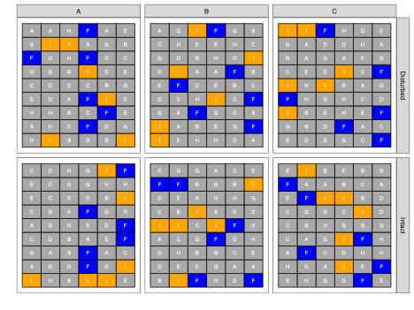
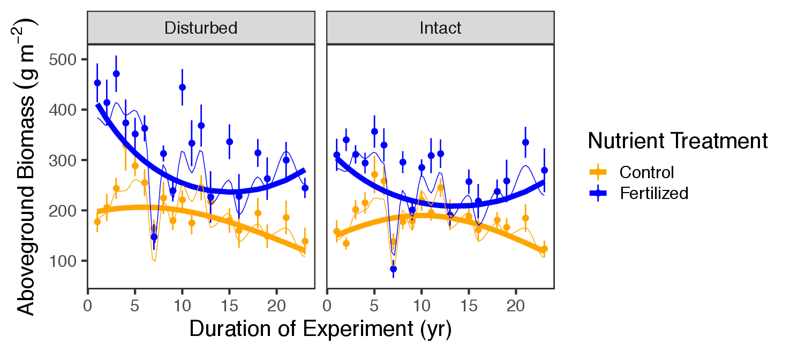

Introduction to path and structural equation modelling
Day 1: Path modelling
Frank Pennekamp
Department of Evolutionary Biology and Environmental Sciences, University of Zurich
November 5, 2025
Quick introduction of participants
- Who are you?
- What is your research question?
- What do you know about path and structural equation modelling already?
General information
Acknowledgements

- Dr. Noémie Pichon, Dr. Fletcher Halliday, Dr. Eliane Meier, Dr. Hugo Saiz, Dr. Debra Zuppinger-Dingley, Rebecca Oester, Annabelle Constance, Fabienne Wiederkehr (course design)
- Dr. Rachel Korn (course development: exercises and solutions)
- Dr. Frank Pennekamp (course development: exercises, solutions and slides, instructor)
Schedule & content
- Day 1:
- General introduction to path modelling for ecological systems (lecture)
- Fitting path models to data (live demo)
- Case study: fitting path models to data (exercises)
- Work on your research question / meta-model (self-study)
- Day 2:
- Constructs: latent and composite variables (lecture)
- Fitting SE models to data (live demo & case study exercises)
- Work on your research question / SE model (self-study)
- Progress update
- Day 3:
- Model visualization (lecture)
- Work on your research question / SE model (self-study)
- Presentation of your SE model and discussion with instructor and peers
Overview
- What the course is about:
- Global estimation of SEMs with R package lavaan (including latents and composites)
- Hands-on exercises and live coding
- A single ecological dataset for demonstration (Seabloom et al. 2020)
- Develop your own SE model
- What will not be covered
- Local estimation of SE models (with R package piecewiseSEM)
- Advanced topics:
- integrate random effects
- disentangle feedback loops
- dealing with spatial and temporal autocorrelation
Learning objectives
You can:
- translate your research question into a meta-model.
- fit a SE model with the R package
lavaan. - assess the quality of a fitted SE model
- interpret your SE model and those reported by others.
- present SE models graphically.
Getting started with Structural Equation Modeling
Understanding (ecological) systems
- Ecological systems characterized by complex network of interactions between organisms and the environment.
- Research questions are often about cause-effect relationships.
- Test these hypotheses using data and statistics.

Why is understanding causes important?
- Causes = mechanisms
- Allows us to predict the behaviour of a system
- Justify interventions (e.g., eradication of invasive species, habitat restoration for threatened species)
- What is the problem?
- Confounding of cause with non-cause (e.g., avoid interventions with no or detrimental effects)

Causality
“Correlation does not imply causation”
- Causation: causing variation in X leading to variation in Y (=X causes Y), everything else being equal.
- Experiments are gold standard to infer causes.
- However, conducting experiments can be unethical or unfeasible.
- Can we learn about causality from observational data?

“Correlation can indicate causation”
A simple correlation implies an unresolved causal structure, since we cannot know which is the cause, which is the effect, or even if both are common effects of some third, unmeasured variable.
Bill Shipley (Cause and correlation in biology, 2004)
- Inferring causes from observations is possible, but requires to rule out confounding.
- What is confounding?
Confounding
Confounding occurs when an outside variable influences both the independent variable (X) and the dependent variable (Y), creating a false impression of a causal relationship between them. This can lead to incorrect conclusions about the nature of the relationship.
Confounding example
Correlation between ice cream sales and cases of drowning are both influenced by temperature (confounder).

Causal diagram
- Graph specifying putative cause-effect relationships.
- Which data-generating mechanisms lead to a set of observational expectations.
- Formalized as Directed Acyclic Graphs (DAGs).
Directed acyclic graphs
- Directed = unidirectional.
- Acyclic = no cycles (=causal loops) permitted.
- Variables are nodes (boxes).
- Edges (one-headed arrows) are causal relationships such as X affects Y.
- Edges can have any functional shape.
- Omitted links and nodes have empirical implications (= assumptions about the causal diagram)
- U variables represent unmeasured causes.
How can we determine causality?
- Build knowledge from past observation
- Design and conduct an experiment or observational study
- Test hypotheses
- Develop theory
The combination of knowledge of correlations with knowledge of causal relations, to obtain certain results, is a different thing from the deduction of causal relations from correlations.”
Sewell Wright, 1923
How can we evaluate causality?
- Build a hypothesized causal diagram
How can we evaluate causality?
- Build a hypothesized causal diagram
- Collect data
How can we evaluate causality?
- Build a hypothesized causal diagram
- Collect data
- Build SEM and test against causal diagram


How can we evaluate causality?
- Build a hypothesized causal diagram
- Collect data
- Build SEM and test against causal diagram

- Repeat!
Biodiversity-ecosystem functioning
Meta-model:
Multiple regression
- Effect of one or more independent variables (X) on a dependent variable (Y).
- Only direct effects on Y considered.
- Regression coefficient quantifies the direction and strength of relationship.
- How much change in Y for one unit change in X.
- Partial effects (i.e. effect of precipitation on biomass when nutrient addition and richness are fixed) when > 1 independent variables.
- Strong correlations between predictors may become problematic.
Biodiversity-ecosystem functioning
Meta-model:
Path model
model <- '
richness ~ nutrients + precipitation
biomass ~ richness + nutrients + precipitation'
sem(model, data = data)- Estimates multiple (regression) equations at once.
- Allow understanding of potentially causal relationships between variables in a system.
- Allows testing both direct and indirect effects.
- Exogenous variables (independent variables):
- only have out-going paths.
- only have out-going paths.
- Endogenous variables (response variables):
- have in-going paths
- can have out-going paths.
Mediation
- Tests whether a particular variable has a mediating effect on a path.
- Often used to test underlying mechanisms.
- In our example, we could ask whether the effect of nutrients on biomass is mediated through biodiversity.
- Possibilities: complete mediation, partial mediation, no mediation.
Motivations to use path models:
- Driver-focused: Understand how drivers influence a system
- Response-focused: Understand and explain a particular response of a system
- Mediation-focused: Understand underlying causal pathways
- Theory-focused: compare observations of a system to available theory
SE modelling philosophy
- A SE model should be specified based on prior evidence / theory (i.e., a meta-model).
- Causal diagram to specify relationships of actual variables.
- Each path requires justification.
Questions?
Exercise
- Your turn!
- What type is your SEM (response, driver, mediation, theory focused)?
- Draw a causal diagram of the dataset you want to understand (define nodes and edges).
- Make a table with putative causal relationships.
SE model fitting
How to estimate SE models?
- Structural equation modelling is a framework rather than a statistical technique.
- Global estimation: based on variance-covariance matrix.
- Lavaan uses Maximum likelihood estimation (ML).
- Lavaan makes several assumptions:
- (Multivariate) normality of endogenous (but not exogenous!) variables required
- Only acyclic relationships (no loops)
- Linear relationships
Global estimation in a nutshell
Observed variables

Scatter plots of observed variables and fitted lines.
Variance-covariance matrix estimated from data
| X1 | X2 | X3 | Y | |
|---|---|---|---|---|
| X | 974.58 | 60.32 | 524.28 | 23.77 |
| X2 | 60.32 | 942.58 | -71.68 | 547.40 |
| X3 | 524.28 | -71.68 | 1140.97 | 40.05 |
| Y | 23.77 | 547.40 | 40.05 | 1167.95 |
- Variances on the diagonal, covariances on the off-diagonal elements
- Variance: \(VAR_{x}=\frac{\sum_{i=1}^{N}(x_{i}-\bar{x})^2}{N-1}\)
- Variance is the degree of spread in a set of data.
- Covariance: \(COV_{x,y}=\frac{\sum_{i=1}^{N}(x_{i}-\bar{x})(y_{i}-\bar{y})}{N-1}\)
- Covariance measures how much two variables are moving together.
Correlation matrix estimated from data
| X1 | X2 | X3 | Y | |
|---|---|---|---|---|
| X | 1.00 | 0.06 | 0.50 | 0.02 |
| X2 | 0.06 | 1.00 | -0.07 | 0.52 |
| X3 | 0.50 | -0.07 | 1.00 | 0.03 |
| Y | 0.02 | 0.52 | 0.03 | 1.00 |
- Correlation: \(COR_{x,y}=\frac{COV_{x,y}}{\sigma_x*\sigma_y}\)
- Correlation matrix is standardized variance-covariance matrix
Path tracing rules
Sewall Wright (1918, 1934) developed a method of estimating causal path coefficients by decomposing the correlations among a set of variables:
- He articulated a set of rules for examining a path diagram that would allow for this mathematical decomposition.
- The correlation of any two variables in a path diagram can be expressed as the sum of coefficients that connect two variables. The connection between one variable and another variable, then, can often be made through more than one route:
- No loops are allowed. In tracing from one variable to another, you cannot pass through the same variable twice following a particular route.
- No going forward and then backward. Once you have traveled along a route forward, you cannot travel backward to get to the variable at the end point. (Only use common causes to account for a correlation between two variables, not common outcomes).
- Only one curved arrow is allowed in tracing from the first variable to the last variable in any route.
Path tracing rules
Unspecified relationships among exogenous variables are their bivariate correlations.
Accounts for existing correlations among exogenous variables not explained by the model.
Path tracing rules
When two variables are connected by a single path, the coefficient of that path is the regression coefficient.
γ typically denotes coefficients for paths from exogenous to endogenous variables.
β typically denotes coefficients for paths between endogenous variables
Path tracing rules
The strength of a compound path is the product of the individual coefficients.
How much of X’s effect on Y2 is transmitted through Y1
Path tracing rules
When variables are connected by more than one pathway, each pathway is the ‘partial’ regression coefficient
- The partial regression coefficient estimates the effect of a pathway holding other pathways constant.
Path tracing rules
Errors on endogenous variables relate the unexplained correlations or variances arising from unmeasured variables.
- \(R^{2}\): ratio of explained to total variation in response (here Y1)
- Unexplained or residual variance = \(1 - R^{2}\)
- Captures other (unknown) sources causing correlation between Y1 and other variables to deviate from 1.
- Error variances are often represented as \(\zeta\) with an arrow leading into the endogenous variable.
Path tracing rules
Unanalyzed (residual) correlations among two endogenous variables are their partial correlations.
- If they were exogenous variables, the relationship would be their bivariate correlation.
- Here we have we have to remove the effects of X on both variables.
- These are known as correlated errors and represented by double-headed arrows between the errors of two endogenous variables.
Path tracing rules
The total effect one variable has on another is the sum of its direct and indirect effects \[ total = \gamma_{X, Y1} * \beta_{Y1, Y2} + \gamma_{X, Y2}\]
Path tracing rules
The total effect (including undirected paths) is equivalent to the total correlation
Observed correlation matrix:
| X1 | X2 | X3 | Y | |
|---|---|---|---|---|
| X1 | 1 | .5 | .4 | .4 |
| X2 | .5 | 1 | .2 | .5 |
| X3 | .4 | .2 | 1 | .3 |
| Y | .4 | .5 | .3 | 1 |
Path tracing in practice
From model to implied correlation matrix
Implied path model for Y1, Y2, and Y3:
Model-implied correlation matrix for Y1, Y2, and Y3:
| Y₁ | Y₂ | Y₃ | |
|---|---|---|---|
| Y₁ | |||
| Y₂ | β₂₁ | ||
| Y₃ | β₃₁ + β₂₁*β₃₂ | β₃₂ |
Decomposing the correlation matrix into path coefficients
Tracing rules allow to work backward from the correlations to derive the path coefficients.
Assume that
r12 = .50, r1Y =.65, and r2Y = .70.
r1Y = beta1 + r12 * beta2.
r2Y = beta2 + r12 * beta1.
Plugin the known values to solve the two equations:
0.65 = beta1 + .50 * beta2
0.70 = beta2 + .50 * beta1.
We get beta1 = .4 and beta2 = .5 (standardized coefficients since we used the correlation matrix).
Accounting for error
- The disturbance term, e, is the amount of unaccounted for variance in Y and is equal to \(\sqrt{1 - R^2}\).
- R2 can be calculated as:
- \(R^2 = beta_1^2 + beta_2^2 + r(X1, X2) * beta_1 * beta_2\)
- \(R^2 = .4^2 + .5^2 + .50 * .4 * .5 = 0.61\)
- Therefore, e = \(\sqrt{1 - 0.61} = .62\).
Checking that everything adds up
Correlation matrix:
| X1 | X2 | X3 | Y | |
|---|---|---|---|---|
| X1 | 1 | .5 | .4 | .4 |
| X2 | .5 | 1 | .2 | .5 |
| X3 | .4 | .2 | 1 | .3 |
| Y | .4 | .5 | .3 | 1 |
- Path tracing for X1-Y correlation:
- r(X1, Y) = X1->Y + X1->X2->Y + X1->X3->Y
- r(X1, Y) = .133 + (.5 * .4) + (.4 * .167) = .4
- r(X1, Y) = X1->Y + X1->X2->Y + X1->X3->Y
- likewise for corr(X2, Y) and corr(X3, Y):
- r(X2, Y) = .4 + (.5 * .133) + (.2 * .167) = .5
- r(X3, Y) = .167 + (.4 * .133) + (.2 * .4) = .3
- r(X2, Y) = .4 + (.5 * .133) + (.2 * .167) = .5
Using covariances instead of correlations
- For simplicity, previous path analysis uses correlations and standardized path coefficients.
- In practice, path models are estimated using covariances and unstandardized coefficients.
- If using covariances, the variances need to be taken into account.
Example: \(Cov(Y1, Y3)\), is \(Var(Y_1) * beta_31 + Var(Y_1)* beta_21 * beta_32\).
where beta is used for the unstandardized regression coefficients.
Global estimation: compare model-implied to observed covariance

Assess goodness of fit by comparing model-implied to observed covariance matrix.
Model fit measures
- \(\chi^2\) statistic
- compare the model-implied to the observed variance-covariance
- good fit when \(\chi^2\) statistic is small (P > 0.05)
- sample-size dependent
- Comparative fit index (CFI):
- deviation from a ‘null’ model (variances estimated but covariances set to 0).
- higher is better, > 0.95 is considered good.
- Root-mean squared error of approximation (RMSEA)
- statistic penalizes models based on sample size
- < 0.10 is acceptable, and anything < 0.06 is good
- Standardized root-mean squared residual (SRMR)
- standardized difference between the observed and predicted correlations
- < 0.08 is considered good
Unstandardized vs standardized coefficients
| Unstandardized | Standardized |
|---|---|
| Reported in raw units | Expressed in units of standard deviations (z transformation) |
| Depend on the scale of the variables | Used for interpretation of relative strength |
| Contain information about variance and mean | Facilitate comparison of paths within a model |
| For predictions in original units | To calculate indirect and total effects within your model |
Best practice: report both types of coefficients!
Z transformation results in mean of 0 and SD of 1: \(Z = \frac{x - \mu(x)}{\sigma(x)}\)
Troubleshooting pathological models (a.k.a. Heywood cases)
- Improper solutions:
- Negative variances
- Correlations larger than 1
- Reasons for the warnings can be:
- Slightly negative error estimates (not really a problem)
- Local non-identification of parameters
- Model misspecification
- Slightly negative error estimates (not really a problem)
Parameter identification
- Identifiability is a common issue in SEM
- Some of the free parameters you are trying to estimate are interchangeable (e.g., a and b in
y = a*x + b*x + c) - Even an infinite amount of data does not allow to identify parameters precisely (e.g. one could be high the other low or vice-versa)
- The more complex a SEM is, the more likely issues of identifiability will become
- Fixing parameters or their variance may be needed to achieve model convergence (especially when latents or composites are involved).
Model identification
- Underidentified:
- Not enough pieces of information to identify parameters uniquely (df < 0).
- Not enough pieces of information to identify parameters uniquely (df < 0).
- Just identified:
- Just enough information to uniquely identify parameters, but no df to check model fit (df = 0).
- Just enough information to uniquely identify parameters, but no df to check model fit (df = 0).
- Over-identified:
- Parameters can be uniquely identified and positive dfs to test model goodness-of-fit (df > 0).
Model identification
“t-rule” to quickly gauge whether a model is under-, just, or overidentified:
\[ t \leq \frac{n (n + 1 )}{2} \]
t = number of unknowns (parameters to be estimated, i.e. variances & covariances)
n = number of knowns (observed variables).
The LHS is how many pieces of information we want to know.
RHS: information we have (number of unique cells in the observed variance-covariance matrix).
Model identification example
\[ t \leq \frac{n (n + 1 )}{2} \]
Unidentified:
- a + b = 8
- multiple possible solutions (e.g., a=7, b=1, a=6, b=2 …)
Just identified:
- add equation a = 3b allows to solve the system
- Single solution a = 6 and b = 2
Over-identified:
- add equation 2a - 4 = 4b gives us more information than we need
Model identification example
Can we identify this simple mediation model?
- How many many pieces of information do we have (n) and how many do we need to estimate (t)?
\[ 5 \leq \frac{3 (3 + 1 )}{2} \] \[ 5 \leq 6 \]
Variable types: continuous
- Exogenous variables:
- No limitations, can be used as endo- and exogenous variables
- Endogenous variables:
- lavaan handles Gaussian error distributions
- For other error distributions consider the piecewiseSEM package.
Variable types: categorical
- Includes binary (yes/no, failure/success, etc.), nominal (site 1, site 2), or ordinal levels (small < medium < large) variables.
- nominal variables currently not covered by lavaan
- Exogenous variables:
- code binary variables as dummy variable (0/1)
- if more than 2 levels, create multiple dummy variables
- Endogenous variables:
- for binary and ordinal variables, use R’s
ordered()function to specify the order, or useordered=argument. - when
ordered=argument is used, WLSMV estimator is used by lavaan.
- for binary and ordinal variables, use R’s
- Bootstrapping approach to get robust standard error estimates due to non-normal errors when dealing with categorical variables.
Data requirements
- Replication should be at least 5x the number of estimated coefficients (not error variances or other correlations).
- To estimate two relationships, at least n = 10 required to fit model.
- Ideally, replication is 5-20x the number of estimated parameters.
- The larger the sample size, the more precise your estimates will be.
Questions?
Live coding session
Your turn: working with the Seabloom dataset
Introduction to the dataset

- Experimental grassland study (started in 1982)
- Long-term consequences of human-driven environmental changes on grasslands:
- Soil disturbance
- Nitrogen deposition
Introduction to the dataset

- Study site located in Minnesota (Cedar Creek Ecosystem Science Reserve).
- Design:
- three study fields within the reserve.
- 35 x 55 m intact (black) and disturbed (red) plots within each field.
Introduction to the dataset
- 4 x 4 m nutrient treatment plots within the intact or disturbed plots (within fields A-C).
- Letters indicate the nutrient treatments.
Introduction to the dataset
- Effect of soil disturbance and nutrient enrichment on aboveground plant biomass.
- Colors: Control and NPK+ (all nutrients plus 9.5 g N m-2 yr-1).
Introduction to the dataset

- Effect of soil disturbance (disking) and nutrient enrichment on:
- effective number of species (ENSPIE)
- richness (S, species 0.3 m−2)
- Simpsons’s evenness
Potential research questions
- How has aboveground biomass changed as a function of soil disturbance and nutrient addition?
- How are these effects mediated by biodiversity?
The meta-model
- Function (biomass) is directly influenced by human impact (nutrients, disturbance)
- Function (biomass) is directly influenced by biodiversity (richness and evenness).
- Human impact also influences biodiversity and thus, have an indirect effect on function via biodiversity.
Exercise 1
- Load and aggregate the Seabloom dataset (data and code provided)
- Inspect raw correlations between the following variables:
- nadd, disk, rich, even, ens.pie, mass.above
- Inspect multivariate normality of the following variables using the
mvn()function inlibrary(MVN):- rich, even, mass.above
- Fit multiple linear regression models to estimate coefficients
- direct effects of nadd, disk, rich and even on above ground biomass (AGB)
- direct effects of nadd and disk on richness and evenness
- What do you conclude?
Exercise 2
- Fit the above DAG to the Seabloom data:
- Assess model goodness of fit.
- Investigate the modification indices. Any paths that need adding?
- Check model summary.
- Do you have a valid model?
Exercise 3
After finding a model with good fit:
- Model analysis:
- Calculate the standardized coefficients.
- Calculate derived quantities (direct, indirect and total effects of nutrient addition on biomass).
Exercise 4
- Build the saturated model, then:
- AIC comparison with simpler model used in exercise 3. Which one is more parsimonious?
- Perform model pruning on saturated model.
Exercise 5
Full mediation
Partial mediation
No mediation
- Perform mediation analysis:
- Is there no, partial, or full mediation of disturbance on biomass via richness and eveness?
- Compare model fits.
- Which model better represents your data?
Introduction to SEM (2025)